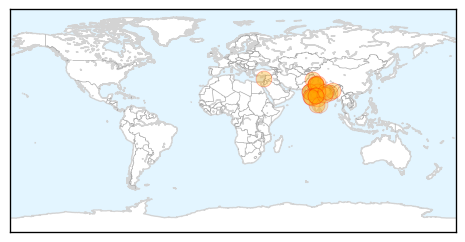

Swine Flu
30-Day Web Trend
17 alerts, 8 warnings

30-Day Twitter Trend
3 alerts, 0 warnings
Article Locations
Article Confidences

Top Articles:
- 1.000
- Swine flu: 1,198 people dead, number of cases cross 22,000
- 1.000
- Swine flu toll touches 1,198; number of cases crosses 22K-mark
- 0.999
- Swine flu symptoms, prevention, treatment: 17 common swine flu questions answered
- 0.999
- 10 more test positive for swine flue
- 0.999
- 84% swine flu deaths in Maharashtra this year result of late medication
- 0.999
- Hospitals don't have labs to detect swine flu in Punjab
- 0.998
- Swine flu claims 43 more lives, toll touches 1,158
- 0.998
- The deadly contours of deadly disease
- 0.998
- Swine flu claims 43 more lives, toll touches 1,158
- 0.997
- H1N1 Mutation Fear Grips State
- 0.997
- 10 more succumb to swine flu in Guj; death toll reaches 302
- 0.994
- No need to panic about swine flu: Health Ministry
- 0.990
- Swine flu bomb ticks
- 0.989
- Swine flu toll in Telangana mounts to 59
- 0.987
- Another 21 swine flu cases confirmed in city
- 0.971
- Preparation taken to prevent swine flu: Nasim - Click Ittefaq
- 0.969
- Centre assisting states on swine flu, Delhi HC told
- 0.964
- Centre assisting states on swine flu, Delhi HC told
- 0.964
- Centre assisting states on swine flu, Delhi HC told
- 0.962
- UAE warns citizens to stay away from India after swine flu spread
- 0.936
- Students, staff with cough or cold to go on leave in Goa
- 0.923
- 11 deaths due to swine flu in TN so far: Govt
- 0.917
- Panel to frame guidelines for swine flu treatment
- 0.895
- UAE warns citizens against travel to India due to spread of swine flu
- 0.781
- Five persons detected with swine flu virus in Assam
- 0.636
- H1N1 scare creates panic in Chennai school
- 0.625
- Arjun Kapoor: Sonam Kapoor Getting Better Slowly
- 0.519
- KUNA : UAE advises nat'ls against travel to India amid swine flu fears
Top Tweets:
-
No tweets found for Mar 04, 2015
Hepatitis
30-Day Web Trend
9 alerts, 5 warnings

30-Day Twitter Trend
0 alerts, 0 warnings

Article Locations

Article Confidences
Top Articles:
Top Tweets:
-
No tweets found for Mar 04, 2015